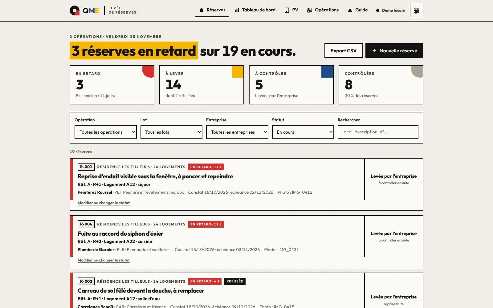
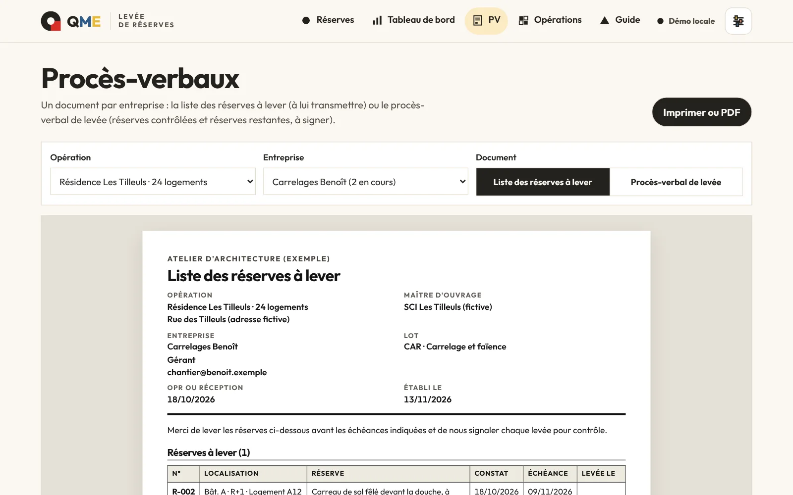

FRENCH INTERFACE · SAMPLE DATA

27 snags.
30% cleared so far.
By contractor:
who is late, at a glance.
After the handover
3 snags overdue.
The oldest:
11 days.
Which contractor is holding
up the site?
THE USUAL WAY · A SHARED LIST
Emails. Photos.
No deadlines.
The fix: a deadline
on every snag.
FRENCH INTERFACE · SAMPLE DATA

The tool computes
the delays.
3 overdue
out of 19 open.
Each one flagged,
with its contractor.
FRENCH INTERFACE · SAMPLE DATA
FRENCH INTERFACE · SAMPLE DATA
27 snags.
30% cleared so far.
By contractor:
who is late, at a glance.
FRENCH INTERFACE · SAMPLE DATA

One report per contractor.
Print or PDF.
Want one built
for your sites?
Built in French. Custom tools for small businesses.
qm-engineering.fr/x